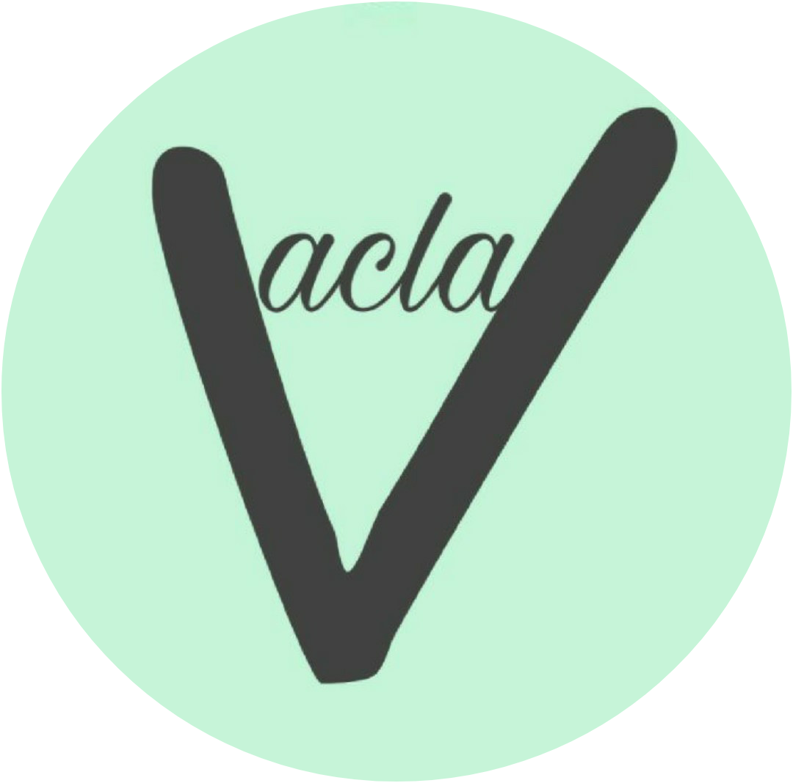

|  |
Jurusan ini merupakan pilihan orang tua saya,
mereka jugalah alasan saya untuk tetap bertahan di jurusan ini.
Terkadang ketika mengikuti perkuliahan ada saat-saat di mana saya
merasa salah pilih jurusan. Hal ini karena ada pelajaran yang kurang saya pahami.
Meskipun demikian saya akan tetap bertahan,karena saya sudah memulainya.
Jurusan Teknik Informatika menurut saya adalah sesuatu yang unik.
Hal yang membuat saya selalu tersenyum adalah ketika membuat coding
kemudian ketika dirunning ternyata berhasil. Hal lainnya adalah ketika
saya mulai mengerti dengan apa yang dipelajari di kelas,Selain itu
teman-teman yang asyik dan penuh dengan kekeluargaan membuat saya
seakan lupa sulitnya membuat suatu bahasa pemograman.
Bagi sebagian orang mungkin kuliah di jurusan teknik informatika adalah
suatu kebanggaan, begitu juga halnya dengan saya. Akan tetapi seperti mahasiswa
pada umumnya, ada masa-masa yang terkadang membuat saya sedih. Kondisi ini
diantaranya yaitu tugas yang beruntun dan jarak deadlinenya yang berdekatan
satu sama lain. Selain itu, hal yang membuat saya prihatin adalah ketika kurang
memahami pelajaran dalam perkuliahan di kelas. Terakhir hal yang paling memilukan
bagi saya adalah ketika deadline tugas yang tinggal hitungan menit dan tiba-tiba
tugas tersebut tidak bisa di running.